アバターの詳細を変更する方法（アイコン、説明、名前）
アバターのアイコンはアバターギャラリーにあります。アバターの名前と説明を見るには、アバターをギャラリーでプレビューしたときに右上端に表示される「情報」ボタンをクリックします（下にあるモバイルアプリのアバターギャラリーの画像をご覧ください）。アイコン、名前、説明はエディターパネルで変更することができます。
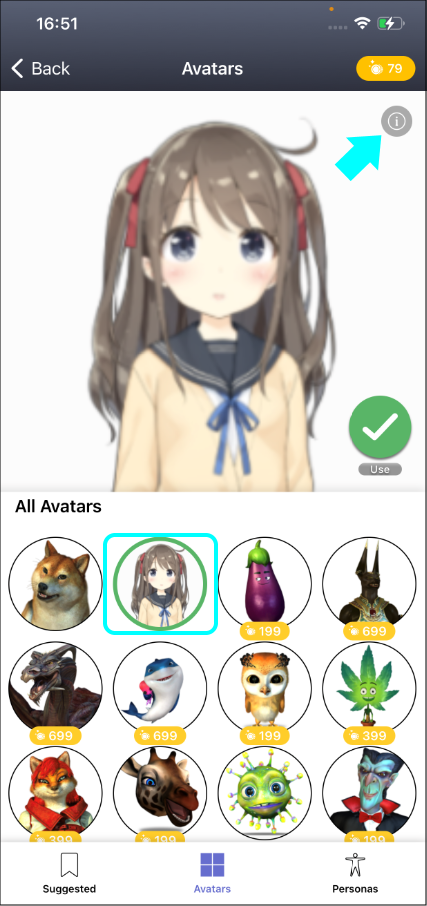
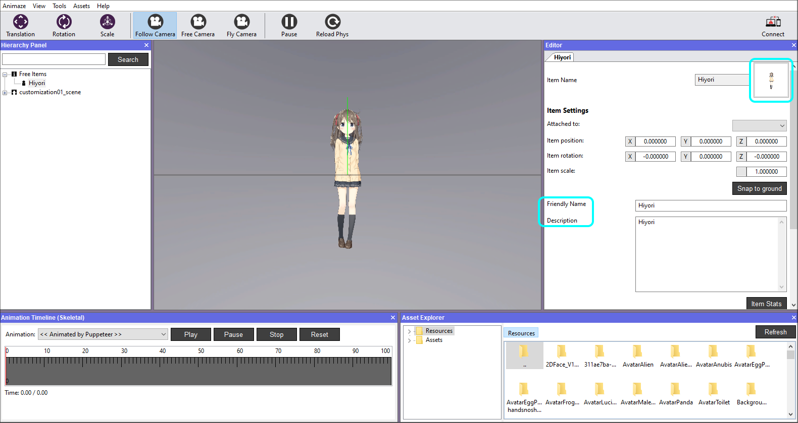
アバターのアイコンを変更する手順：
-
PC上のAnimazeエディターのインストールフォルダーに移動します

Animazeエディターのフォルダー
-
「Data」のフォルダーに移動します

「Data」のフォルダー
-
「Resources」のフォルダーを開きます

「Resources」のフォルダー
-
アバターのフォルダーを開きます
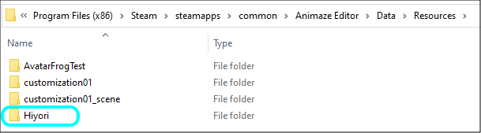
「Model」のフォルダー
-
「icon_avatarname.png」という名前のファイルがあります。インポート時にエディターが自動で作成したファイルです。
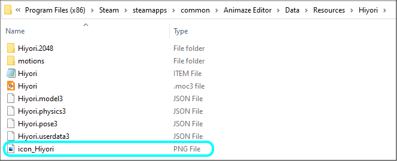
アイコンのファイル
このファイルを好きなファイルで置き換えたり、改変したりすることで、アプリとエディターにおけるアバターのアイコンを変更することができます。
適切に動作させるには、命名規則（icon_theavatarname）、*.pngという画像の形式、スクエアサイズを維持する必要があります。
-
Animazeエディターが変更を検出し、再インポートを求めてきます。「はい」をクリックします
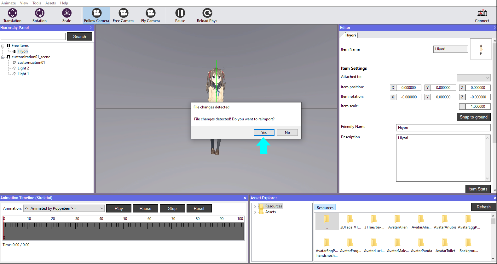
変更の検出
-
変更を確認するには、「アセット」メニューに移動し、「アバターを読み込む」を選択してください。

-
「更新」ボタンを押し、ヒヨリを探して選択します

9.アバターが新しいアイコンとして表示されます
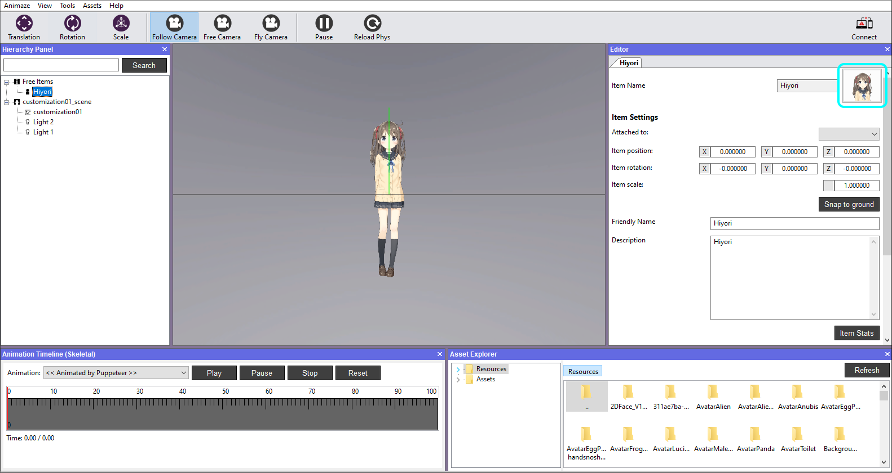
アバターの名前を変更する手順：
-
Animazeエディターを開きます
-
エディターパネルで、ニックネームのフィールドに好きな名前を入力します。この名前はモバイルアプリで表示されます。人間が読みやすい名前にする（ランダムな文字列や数字は避ける）ことをオススメします。なお、使用できるのはアルファベットと特殊文字です。
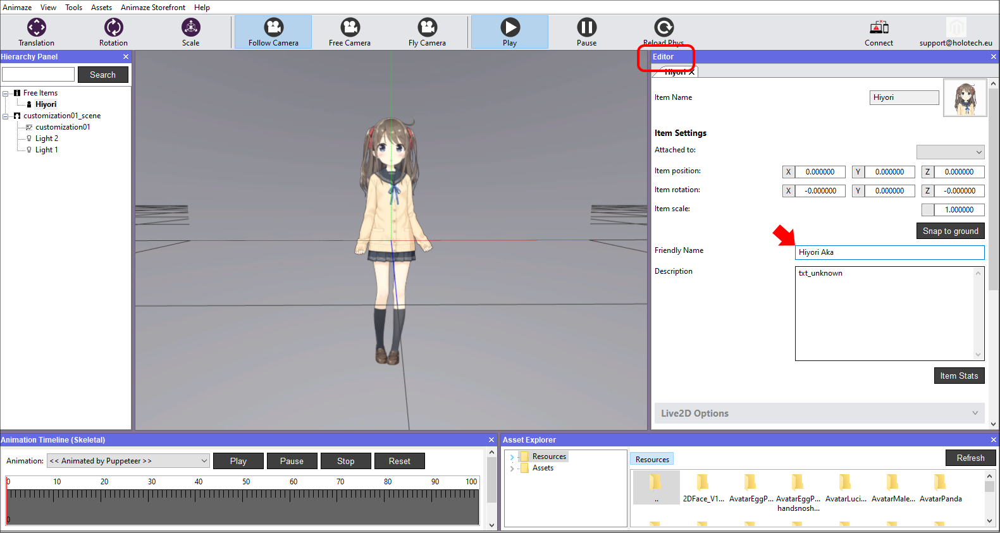
アバターの説明を変更する手順：
1 Animazeエディターを開きます
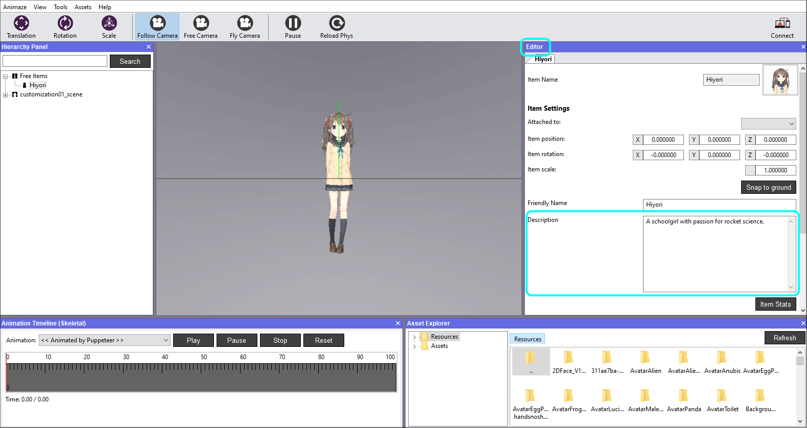
2. エディターパネルで、説明のフィールドに好きな説明を入力します。ここでは、あなたが想像するアバターのバックストーリーや、専門的な詳細を入力したり、空白のままにしたりすることができます。
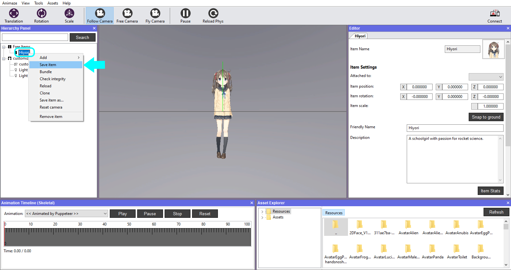
-
名前、説明、その他の詳細などの変更を終えたら、階層パネルでアイテムを保存します。
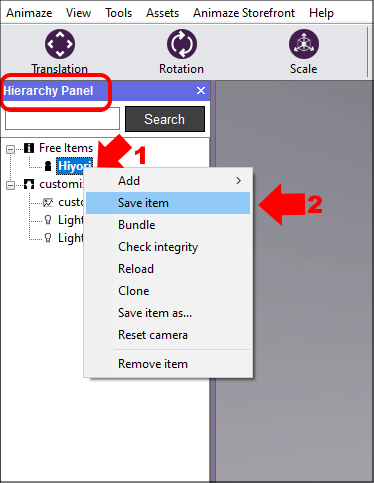
アイテムを保存
「アイテムの保存形式」を選択すると、エディターが、新しいバージョンのアイテムを作成し、読み込みます。
すなわち、「アイテムの保存形式」で、「Hiyori_version2」として保存すると、「Resources」のディレクトリに、オリジナルのバージョンとは別のフォルダーが新しいアイテムとして作成されます。
アプリのアバターギャラリーの右上にある「情報」ボタンを押すと、アバターをAnimazeアプリに送って変更を確認することができます。
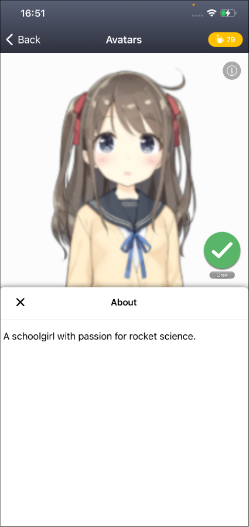